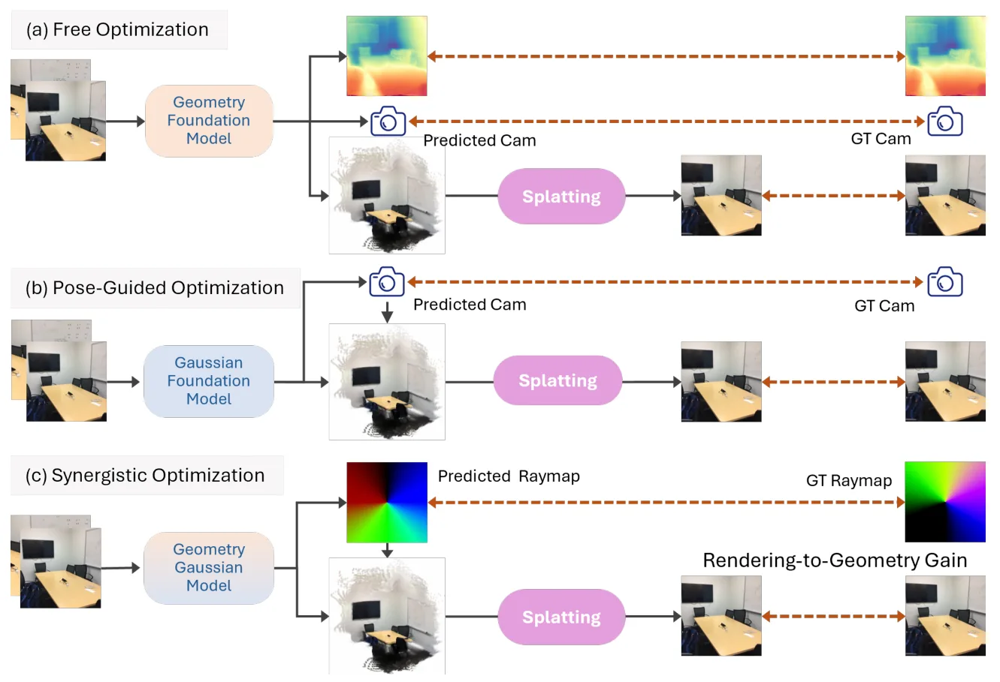
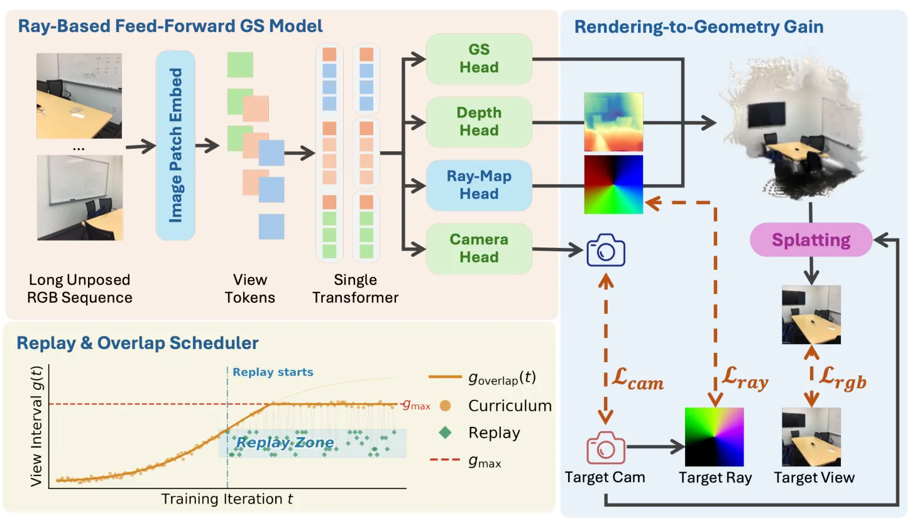

NoDrift3R：Raymap 引导耦合的抗漂移无位姿前馈三维重建NoDrift3R: Raymap-Guided Coupling for Drift-Robust Unposed Feed-Forward 3D Reconstruction
对无 COLMAP/无位姿快速三维重建、3DGS 初始化和长序列漂移问题有价值；更偏重建/NVS，距离完整 SLAM 系统仍有一步。需验证 raymap 噪声、尺度一致性和跨域长轨迹表现。
一句话工作总结
通过 raymap 几何锚定和双频视角调度，缓解无位姿前馈 3DGS 的长序列 pose drift。
摘要
NoDrift3R 针对无位姿前馈 3DGS/三维重建在长图像序列中因相机位姿估计漂移导致重建质量下降的问题，提出 Raymap-Guided Coupling Module（RGC）。该模块将 Gaussian 中心锚定到 raymap 诱导的几何上，并在统一目标中联合优化 RGB 重建、raymap 一致性和 camera regularization，使几何和外观形成双向反馈。作者还提出 Dual-Frequency Viewpoint Scheduling，通过逐渐扩展长间隔并回放短间隔图像对，稳定长时序训练。
Pose-Free Feed-forward 3D Gaussian Splatting (3DGS) has recently emerged as a powerful paradigm for fast scene reconstruction. However, its performance degrades significantly in long image sequences due to cumulative camera pose estimation drift, which propagates errors into geometric modeling and severely limits rendering fidelity. In this work, we revisit the long-sequence bottleneck and identify pose drift as the primary factor restricting reconstruction quality. Furthermore, while SfM-based pseudo ground-truth poses introduce sensor noise, purely rendering-based supervision often leads to optimization instability and local minima due to the entangled optimization of geometry and pose. To address the challenges, we propose a synergistic pose-free framework that explicitly couples geometry and appearance via a Raymap-Guided Coupling Module (RGC). Concretely, we anchor Gaussian centers to raymap-induced geometry and jointly optimize RGB reconstruction, raymap consistency, and camera regularization under a unified objective, yielding a bidirectional feedback loop: stronger geometry improves rendering, and appearance supervision in turn refines geometry and pose. To further stabilize learning across wide temporal ranges, we introduce a Dual-Frequency Viewpoint Scheduling strategy that combines easy-to-hard interval expansion with replay of short-interval pairs. Extensive experiments across in-domain and cross-domain datasets show consistent gains in both rendering and pose estimation, with notably improved robustness on long sequences. Ablation studies validate our central insight: explicitly designed geometry-appearance synergy is the key to scalable and drift-robust pose-free feed-forward 3D reconstruction.
中文解读摘录
- 链接：https://arxiv.org/abs/2607.07168 ｜ PDF：https://arxiv.org/pdf/2607.07168
- 中文题名：NoDrift3R：Raymap 引导耦合的抗漂移无位姿前馈三维重建
- 关键信息：面向无位姿 feed-forward 3DGS/3D reconstruction 长序列漂移问题，提出 Raymap-Guided Coupling Module，把 Gaussian centers 锚定到 raymap 几何，并联合优化 RGB 重建、raymap consistency 与 camera regularization；同时用 Dual-Frequency Viewpoint Scheduling 兼顾长间隔扩展和短间隔回放。
- 为什么值得看：DUSt3R/MASt3R/VGGT 之后，无位姿前馈重建在短序列很强，但长序列仍受 pose drift 限制。该文把几何和外观耦合设计为显式反馈回路，对机器人长轨迹快速重建和 3DGS 初始化很有参考价值。
- 需要核查：raymap 来源与噪声敏感性、相机 regularization 是否限制真实大尺度轨迹、长序列跨域数据上的失败模式，以及与 COLMAP/SfM pseudo pose 监督的公平性。
图表/页面预览

{kind=link}

{kind=link}
